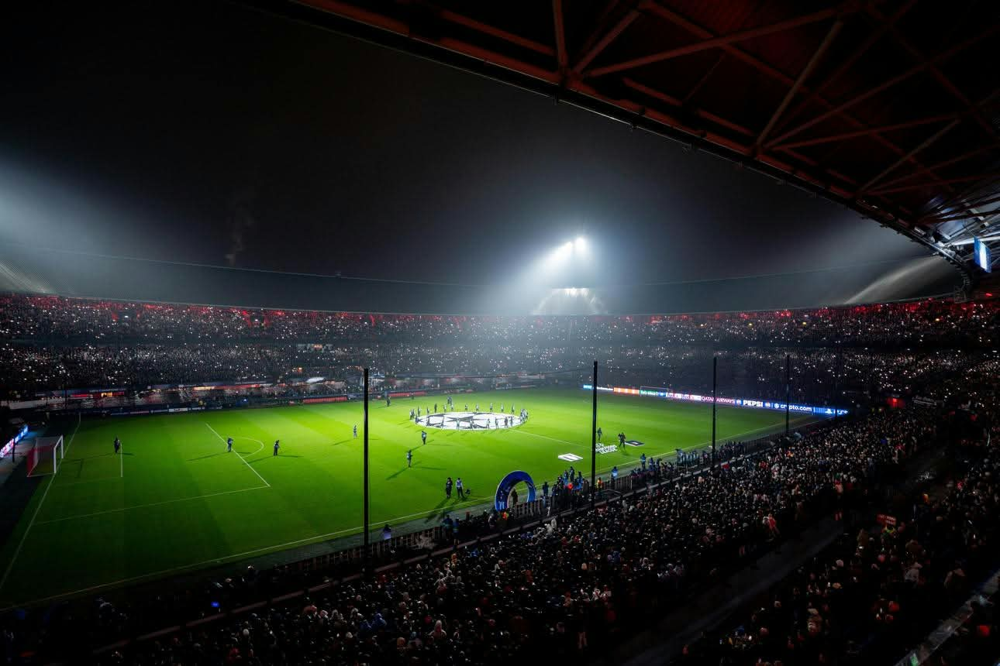

Niemand had er vertrouwen in.
Op 22 januari 2025 stond De Kuip in het teken van een enorme Europese uitdaging. Feyenoord nam het op tegen Bayern München, een van de grootste clubs ter wereld. Op papier was Bayern de favoriet. Veel mensen gingen er vanuit dat Feyenoord op die dag hard onderuit gingen. Feyenoord had 10 punten uit 6 wedstrijden. Bayern had 12 punten.
<
Alles op het spel...
het is een koude ochtend in Rotterdam als Feyenoord druk bezig is met de training. De spelers van Feyenoord keken er naar uit om tegen zo'n europese grootmacht. Santiago Gimenez zei in een interview dat ze goed hadden gekeken naar andere clubs die Bayern Munchen weleens hadden verslagen. "I think the key will be to counterattack." Zei Santiago. En nou en of dat is gelukt. "We zijn de underdogs tegen Bayern Munchen." Zei Brian Priske. Het Team van feyenoord en een deel van de supporters hadden er volop vertrouwen in. De rest van europa en de rivalen van feyenoord Gingen van een flinke nederlaag van de Rotterdammers uit.
Geweldige sfeer in de kuip
🎥 Feyenoord in beeld
Bekijk de beelden en beleef Feyenoord ook buiten het veld.
De aftrap
Feyenoord trapt af! De wedstrijd begint en feyenoord zet gelijk goed druk. Maar Bayern Munchen doet hetzelfde. In de 21ste minuut glipt Feyenoord erlangs en met een wereld pass van Gijs Smal naar de Mexicaanse spits Santiago Gimenez is het 1-0 voor Feyenoord. De Kuip ontploft. Niemand had dit zien aankomen.
Nobody said it was easy:
Bayern München probeert terug te komen in de wedstrijd, maar feyenoord verdegidt net als Prime Real Madrid en dan heb je ook nog de Nederlandse Neuer in het goal staan van Feyenoord Justin Bijlow. In de minuut 45+7 is er een corner voor Bayern Munchen. Justin Bijlow tikt de bal de 16 uit en feyenoord kan counteren. Het is 3 van Feyenoord tegen 2 van Bayern. Uiteindelijk is Calvin stengs aan de bal en word hij onderuitgehaald net in de 16. De arbieter fluit voor een strafschop in de laatste seconde van de eerste helft. Santiago gimenez staat klaar om hem te nemen, en tikt er hem netjes erin. 2-0 Feyenoord!
7 reddingen van de doelman en een cleansheat! Ongetwijfeld een van zijn beste wedstrijden tot nu toe! Hij kreeg daarom ook een 9,1 rating en eindigde in de champions league team of the week. 20% balbezit voor Feyenoord tegenover 80% van Bayern! Echte Harambal van Feyenoord.
De eindstand
Doelpunten: Santiago Giménez (2) en Ayase Ueda.
TERUG NAAR HOME